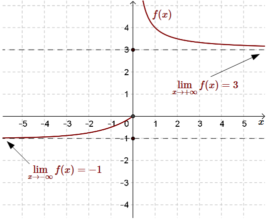

[strona w trakcie przygotowania]
Granicę funkcji \(f(x)\) w plus nieskończoności (\(+\infty \)) zapisujemy tak:
\[\lim_{x \to +\infty}f(x)\] a w minus nieskończoności tak: \[\lim_{x \to -\infty}f(x)\]
Intuicyjnie - granica funkcji w plus/minus nieskończoności, to wartość do której
dąży funkcja, wraz z tym jak argumenty funkcji dążą do plus/minus nieskończoności.
Przykładowa ilustracja granicy funkcji w plus i minus nieskończoności: 
Definicja granicy w plus nieskończoności
Granicą funkcji \(f(x)\) w plus nieskończoności jest liczba
\(g\): \[\lim_{x \to +\infty}f(x)=g \] jeżeli dla każdego ciągu \((x_n)\) takiego, że: \(\lim_{n
\to \infty}x_n=+\infty \), zachodzi: \(\lim_{n \to \infty} f(x_n)=g\).
Definicja granicy w minus nieskończoności
Granicą funkcji \(f(x)\) w minus nieskończoności jest liczba
\(g\): \[\lim_{x \to -\infty}f(x)=g \] jeżeli dla każdego ciągu \((x_n)\) takiego, że: \(\lim_{n
\to \infty}x_n=-\infty \), zachodzi: \(\lim_{n \to \infty} f(x_n)=g\).
Własności granic
Jeżeli istnieją granice: \(\lim_{x \to +\infty}f(x)\) oraz \(\lim_{x \to
+\infty}g(x)\), to wówczas:
\(\lim_{x \to +\infty}\Bigl(c\cdot f(x)\Bigl)=c\cdot \lim_{x \to +\infty}f(x)\)
\(\lim_{x \to +\infty}\Bigl( f(x)+g(x)\Bigl)=\lim_{x \to +\infty}f(x)+\lim_{x \to
+\infty}g(x)\)
\(\lim_{x \to +\infty}\Bigl( f(x)-g(x)\Bigl)=\lim_{x \to +\infty}f(x)-\lim_{x \to
+\infty}g(x)\)
\(\lim_{x \to +\infty}\Bigl( f(x)\cdot g(x)\Bigl)=\lim_{x \to +\infty}f(x)\cdot \lim_{x \to
+\infty}g(x)\)
jeżeli dodatkowo: \(\lim_{x \to +\infty}g(x)\ne 0\), to: \(\lim_{x \to +\infty}\left(
\frac{f(x)}{g(x)}\right)=\frac{\lim\limits_{x \to +\infty}f(x)}{\lim\limits_{x \to
+\infty}g(x)}\)
jeżeli dodatkowo: \(\lim_{x \to +\infty}f(x) = g \) oraz \( g \ge 0\), to: \(\lim_{x \to
+\infty}\sqrt{f(x)}=\sqrt{g}\)
Powyższe własności granic są również prawdziwe w minus nieskończoności.
Oblicz granicę: \(\lim_{x \to +\infty}\frac{5x^3-2x^2+1}{x^4+x^3-2x} \)
Dzielimy
licznik i mianownik przez \(x^4\) (czyli największą potęgę \(x\)-a z mianownika: \[\begin{split}
\lim_{x \to +\infty}\frac{5x^3-2x^2+1}{x^4+x^3-2x}&=\lim_{x \to
+\infty}\frac{\frac{5x^3}{x^4}-\frac{2x^2}{x^4}+\frac{1}{x^4}}{\frac{x^4}{x^4}+\frac{x^3}{x^4}-\frac{2x}{x^4}}=\\[6pt]
&=\lim_{x \to
+\infty}\frac{\frac{5}{x}-\frac{2}{x^2}+\frac{1}{x^4}}{1+\frac{1}{x}-\frac{2}{x^3}}=\frac{0}{1}=0
\end{split}\]